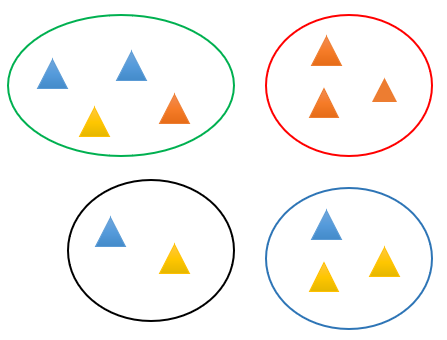
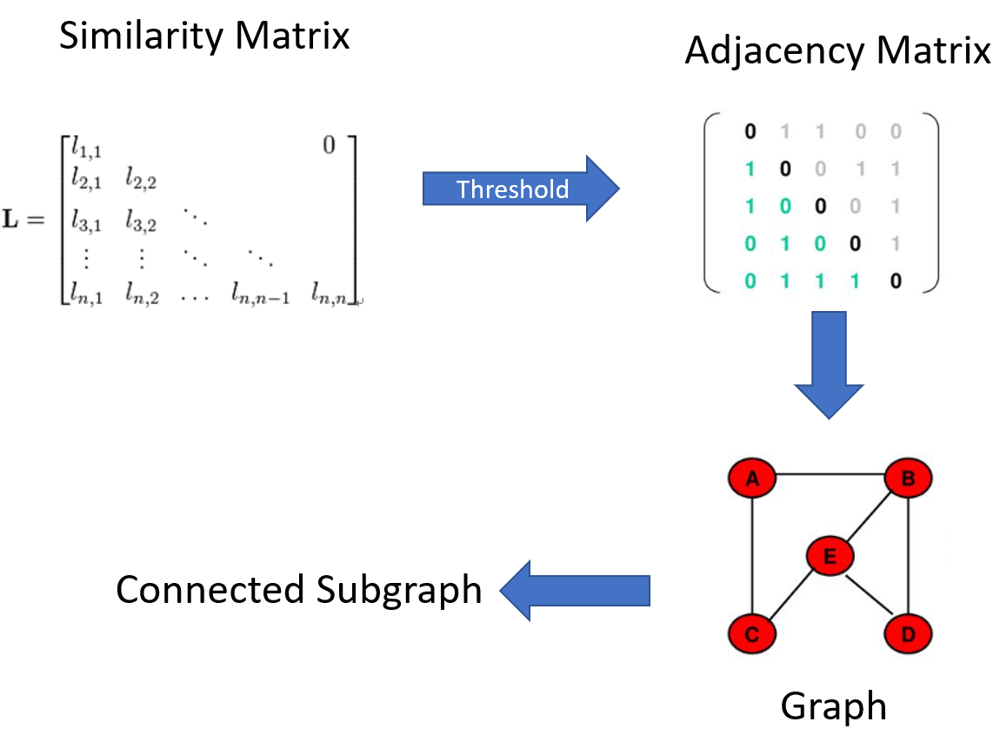
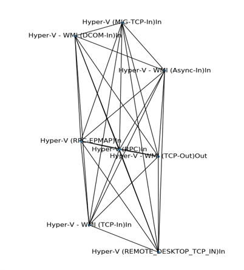

Background & Obstacles
1. There are more than one million firewall rules. Manually monitoring is impractical.
2. The firewall rules in the datacenter are not well-formed.
1) There are some invalid firewall rules.
2) Some teams will casually deploy their firewall rules.
3) No one understands all firewall rules in the datacenter. It is hard to label all the firewall rules.
3. Firewall rules are dynamic. Applications will change firewall rules now and then.
4. Hackers will change the firewall rules in several machines, making monitoring such behavior challenging since so many rules exist.
Target
We need to design a method to detect abnormal firewall rules effectively.
Solution
- Observation
Machines in the datacenter can be described as virtual groups. As shown below, circles with different colors are different virtual groups. Each group has several machines, represented by triangles. Here we get the "spatial distribution of machines."
However, virtual groups do not correspond to functional groups. Different teams can use machines in the same virtual groups for various purposes, represented by triangles with different colors. We call it the "functional distribution of machines."
Unfortunately, we have no assessment of the functional distribution of machines. Only spatial distributions are available. In addition, we can figure out all the firewall rules deployed in each machine.
- Assumption
I proposed two assumptions for this scenario. These two assumptions significantly reduce the problem's complexity, leading to a practical solution.
1. Most firewall rules are configured reasonably. (Most people are good people :)
2. A single firewall rule can not satisfy the requirement of service. A group of firewall rules should serve the same purpose. (People stick together)
- Deduction
Here is the critical point.
1. Firewall rules serving the same purpose should have the same spatial distribution in the datacenter.
2. If a firewall rule is confirmed to be configured reasonably, another firewall rule that shares the same spatial distribution should also be considered as configured reasonably.
- Conclusion
We can use an unsupervised learning algorithm to cluster firewall rules into functional groups based on spatial distribution. After that, labeling the group is enough.
Algorithm & Results
- Data representation
Each firewall rule is represented by a vector that describes its spatial distribution.

Each element in the vector represents how many machines have this firewall rule in this location (virtual group).
- Clustering
By calculating the similarity of vectors, firewall rules can be clustered unsupervised.
Result of the similarity matrix. Each line or column represents a firewall rule. Large yellow Triangles on the diagonal correspond to standard firewall rules. Minor points in the diagonal are suspicious (outliers).

- Result
I did not use the names of firewall rules in the algorithm. But firewall rules with similar names can be discovered by the algorithm. This proves that we can find functional groups of firewall rules and outliers.
